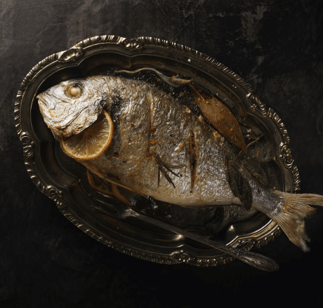

5 рецептов на каждый день для здоровья кожи

18.01.2023

1 034

5 мин
Содержание
Когда видишь перечень пищи, не рекомендованной при акне, кажется, что можно повесить замок на холодильник, по вечерам грызть стебель сельдерея и плакать. Но на самом деле в запасе остается достаточно продуктов, из которых можно приготовить большое количество блюд на каждый день. Можно и нужно есть:
- овощи
- белое мясо (кролик, индейка)
- рыбу морскую и речную
- брокколи
- листовые салаты
- сладкие перецы
- авокадо
- батат
Брокколи в сметанно-чесночном соусе

Брокколи – кладезь полезных микроэлементов и витаминов, поэтому не нужно пренебрегать этим овощем.
Но просто отварное брокколи мало кто захочет есть, поэтому важно его вкусно приготовить.
Брокколи нужно порезать и отварить в сотейнике.
Приготовить чесночный соус: в небольшой кастрюле растопить кусочек сливочного масла, добавить пару столовых ложек сметаны, затем чеснок.
Если консистенция слишком густая – добавить немного воды.
Соль, перец по вкусу. Брокколи откидываем в сотейник и соединяем с соусом.
Можно есть в качестве отдельного блюда или подавать, как гарнир, например, к рыбе или мясу.
Банановое печенье без муки

Бананы порезать кусочками и измельчить вилкой или в блендере.
Добавить понемногу кокосовую стружку, замешивая тесто до средней консистенции, чтобы держало форму, но не было слишком густым.
Взбить в крепкую пену 1 яичный белок, аккуратно перемешать с тестом, добиваясь однородной структуры.
Поместить тесто в кондитерский мешочек и высадить на противень, покрытый пекарской бумагой (или выложить печенюшки с помощью ложки). Поместить в нагретую до 140–150 градусов духовку на 25–30 минут. Следить, чтобы не пригорело.
Морковные котлетки в духовке
Этот рецепт так же прост, как и предыдущие. Натираем на терке около 600 гр моркови.
Добавляем 2 яйца, 100 гр манной крупы, столовую ложку сметаны, укроп, а еще лучше шпинат, солим, перчим.
Формируем котлеты и обжариваем их на оливковом масле по 5–7 минут с каждой стороны.
Дорадо, запеченная в фольге

Дорадо сама по себе вкусная и нежная рыба с минимумом костей, что делает ее еще более привлекательной.
Эту рыбу сложно испортить в процессе приготовления. Поэтому ухищрения тут не понадобятся.
Для того, чтобы вкусно приготовить дорадо, нужно нарезать лимон на дольки.
Натереть рыбу солью, внутрь выложить кусочки лимона и завернуть в фольгу.
Поставить в духовку, разогретую до 180 градусов, минут на 20.
Вкуснейшее, сочное и полезное блюдо готово.
Смузи – идеальный перекус
Смузи – прекрасный вариант завтрака или перекуса, когда не очень хочется готовить. Вот несколько вариантов, которые легко приготовить, а ингредиенты найдутся в холодильнике у любой хозяйки:
- порция натурального йогурта + 100 грамм творога + чашка замороженных ягод + горсть шпината
- порция фильтрованной воды + морковь + яблоко + горсть зелени
- фильтрованная вода + пол стакана кусочков ананаса + горсть зелени + 2 финика
- фильтрованная вода + яблоко + капуста + брокколи + горсть зелени.
- порция натурального йогурта + 2 горсти ягод + горсть зелени